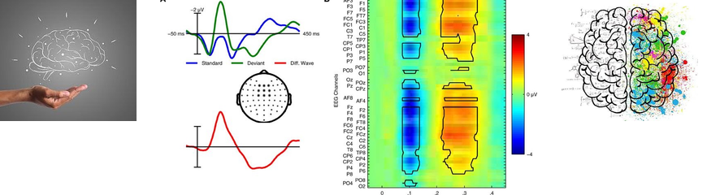

Research enquiries

Enquiries are welcome from motivated students and researchers interested in affective neuroscience, psychological difficulties and experimental methods. A useful starting point is a question about emotional processing that connects with the research direction.
Potential interests include emotional reactivity and recovery, attentional bias and persistence, cognitive control, EEG/ERP, eye tracking and behavioural experiments.
For PhD enquiries, please contact Dr. Hiran Shanake Perera to discuss current availability, funding and supervision arrangements.
Postgraduate research
If you are considering doctoral research, send a short account of the question you would like to investigate, why it matters and how it relates to the work described here. You do not need to arrive with a complete EEG protocol, but a focused question is more useful than a broad interest in “the brain and emotion”.
It is helpful to include your academic background, relevant research experience, a CV and your intended starting period. Mention any experience with experimental design, statistics, programming, EEG or eye tracking, alongside areas you hope to learn.
Supervision, admission and funding are separate matters. An initial discussion does not establish an offer or a funding commitment.
Other roles and opportunities
Enquiries about the following types of contribution can be discussed directly. Current openings are not confirmed.
- Postdoctoral research.
- Research assistant roles.
- Undergraduate student assistant roles.
- Part-time photography, videography and editing support.
High-school placements are not offered.
Collaboration
For a potential collaboration, outline the research question, the contribution you have in mind and how it relates to emotional timing, attention or experimental psychopathology. Please distinguish an early idea from an established project and indicate any practical constraints.
Technical and methodological enquiries are also welcome. A brief description of the task or analysis issue makes it easier to identify whether there is a useful fit.
How to get in touch
Email hiranp@sunway.edu.my with a clear subject such as “Postgraduate research enquiry” or “Research collaboration”.
Include your main question, relevant background and a concise explanation of the connection to this research. Please avoid sending identifiable participant data or confidential study material in an initial enquiry.